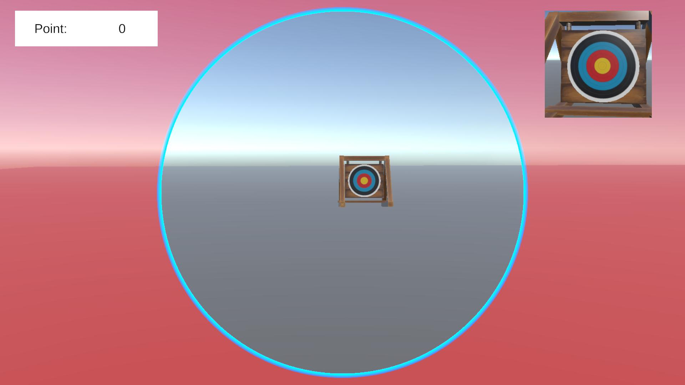

ゲーム一覧 ／ Archery
Archery
弓の照準操作・矢の物理挙動・得点判定と、照準UIのシェーダーを個人で制作。
- ジャンル
- 3Dアーチェリー（的当て）
- 開発期間
- 約1週間
- チーム構成
- 個人制作
- 使用言語・エンジン
- C# / HLSL / Unity（6000.3.8f1）・Universal Render Pipeline

作品概要
マウス操作で弓を構え、的を狙って矢を放つ3Dアーチェリーゲームです。1人で約1週間かけて制作しました。左クリックを長押しすると弓を構えてカメラがズームし、マウスで照準を調整します。クリックを離すと矢を発射し、的の中心に近いほど高い得点（10〜6点）が入ります。3本命中させるとリザルト画面が表示されます。
操作方法
- マウス移動：照準の調整
- 左クリック長押し：弓を構える（ズーム・照準UI表示）
- 左クリックを離す：矢を発射
使用技術
Unity / C# / UniTask / R3 / LitMotion / Input System / Rigidbody / Animator IK / シェーダー（HLSL・URP） / TextMesh Pro
担当内容（個人制作のため全体）
- マウス入力による弓の照準操作と、構え・発射時のカメラ制御
- Rigidbodyを使った矢の発射と、的への命中・得点判定
- 照準範囲を円で表示するUIシェーダーと、ズーム・フェード演出
- Animator IKでキャラクターの両手を弓に合わせる処理
技術解説
- Input Systemの入力をR3のSubjectで通知し、「押した」「離した」を購読して構え・発射を切り替え。
- 矢はカメラの向きに初速を与え、Rigidbodyの物理演算で重力を含んだ軌道を再現。
- 的の中心から矢までの距離で得点を5段階に判定し、R3のReactivePropertyで命中数を監視してリザルトを表示。
- 自作シェーダーで円の半径を変えられる照準UIを作り、LitMotionで半径・FoV・透明度をアニメーション。UniTaskとCancellationTokenで演出の待ち・中断を制御。
開発情報
| ジャンル | 3Dアーチェリー（的当て） |
|---|---|
| 開発期間 | 約1週間 |
| チーム構成 | 個人制作 |
| 担当役割 | 企画・プログラム全般（照準操作、カメラ、矢の物理挙動、得点判定、UI・シェーダー、演出） |
| 使用言語・エンジン | C# / HLSL / Unity（6000.3.8f1）・Universal Render Pipeline |
| 開発環境 | Visual Studio Code / GitHub |
| 公開先 | ブラウザ版（WebGL・プレイ可能） |
| ソースコード | 実装コードの抜粋（サイト内） |
設計の工夫と選択理由
「何を選んだか」と「なぜ選んだか」、比較した方法をまとめています。
| 設計要素 | 採用した方法 | ねらい | 比較した方法・避けた理由 |
|---|---|---|---|
| 入力の受け取り | Input SystemのInputActionをクラスに包み、R3のSubjectで通知 | 「押した」「離した」を購読するだけで処理を書け、入力の取得とゲーム側の処理を分けられる | UpdateでInput.GetMouseButtonを毎フレーム確認 → 入力処理とカメラ・演出の処理が1か所に混ざるため |
| 矢の軌道 | Rigidbodyに初速を与え、物理演算に任せる | 重力による落下を含んだ自然な放物線になり、狙いの難しさが生まれる | Transformで直線移動 → 重力が表現できず、遠くの的でも狙いがぶれないため |
| 得点判定 | 的の中心から矢までの距離で段階判定 | しきい値をインスペクターから調整でき、的の大きさが変わっても対応しやすい | 得点ごとに当たり判定のコライダーを重ねる → オブジェクトが増え、調整が手間になるため |
| 照準UI | 自作シェーダーの _Radius をLitMotionで変化 | 構えている間に円が絞られ、狙っている範囲を視覚的に伝えられる | 円の画像を拡大縮小 → 縁の太さまで変わり、画面比率で円がゆがむため |
| 演出の待ちと中断 | UniTask＋CancellationToken | ズームアウトと照準UIのフェードを同時に待ち、途中で発射したときは演出を中断できる | コルーチン → 複数の演出を並行して待つ処理や中断が書きにくいため |
苦労した点と解決方法
「現象 → 原因 → 対策」の順で、開発中に直面した課題をまとめています。
課題1：照準の円が画面比率でゆがむ
現象
WebGLで書き出したときに照準の円が歪んでしまう
原因
WebGLの書き出し時の画面比によって照準の円の描画が変わってしまう
対策
シェーダーでUVのx方向に画面のアスペクト比を掛けて真円にした
既知の課題と今後の改善予定
既知の課題
- 矢が的に当たらなかった場合、次の矢を構えられる状態に戻らない可能性がある（外れたときに操作を再開する処理がうまく働いていない）。
- 的を外した矢は命中数に数えないため、外し続けるとリザルト画面に進まない。
- モデルのIKがうまく行ってない
次に改善したい点と、その理由
- 発射数を3本に固定し、外れも含めて結果を表示する。最後まで遊べることを保証するため。
- 風や距離の変化を加えて、狙う楽しさを増やす
- モデルの手でちゃんと矢を持っているようにする
使用ライブラリ・素材
Unityライブラリ
- UniTask（Cysharp）
- R3（Cysharp）
- LitMotion（AnnulusGames）
- Input System / TextMesh Pro / Universal Render Pipeline（Unity Technologies）
3Dモデル・アニメーション
- Mixamo（キャラクター・アニメーション）
- Olympic recurve bow（弓のモデル）